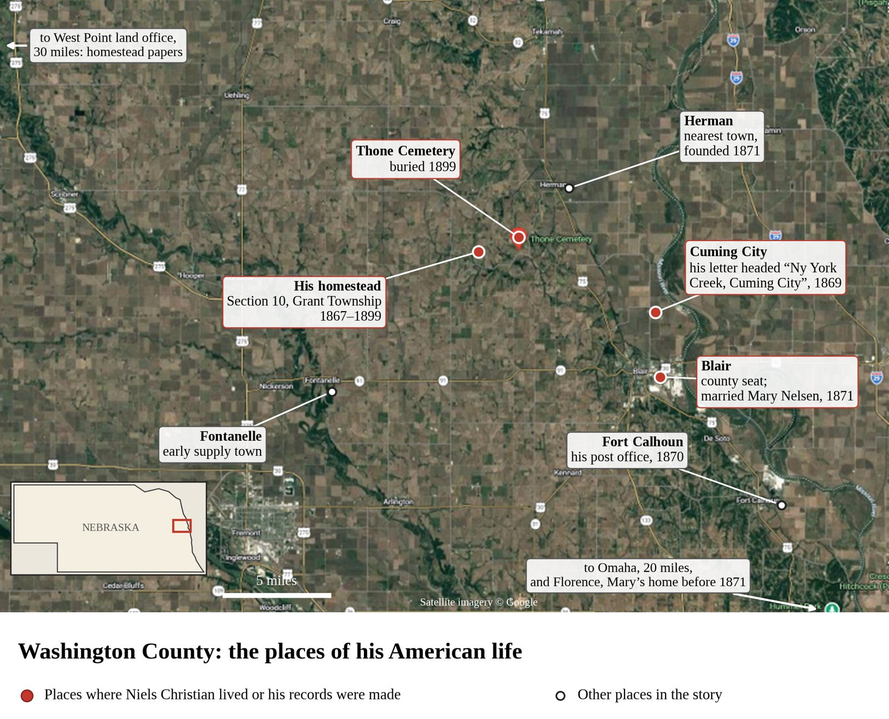
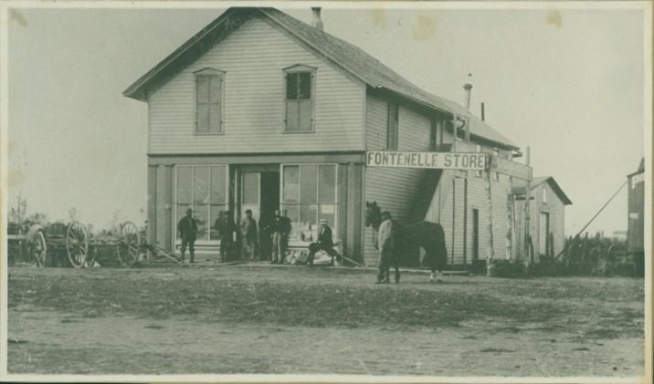
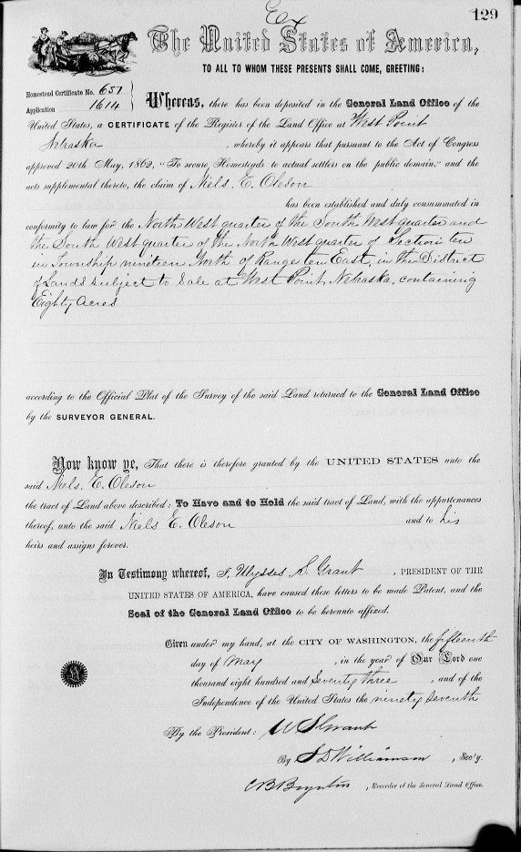
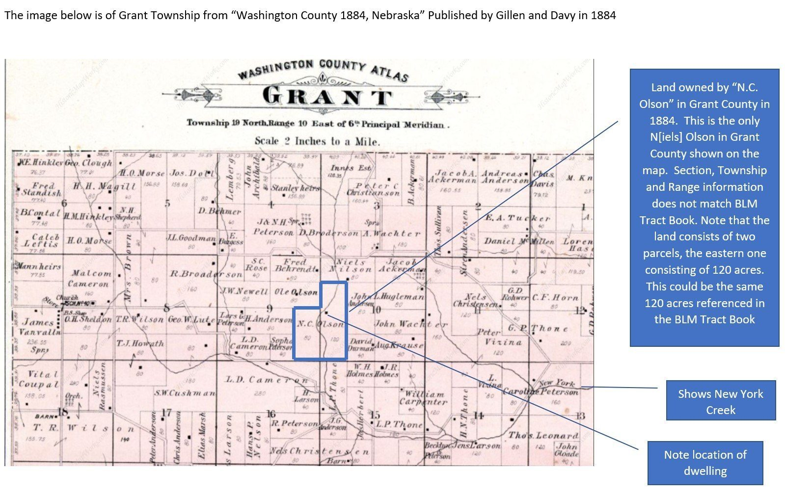
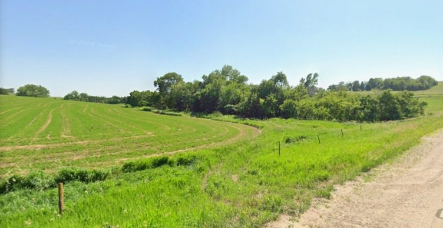
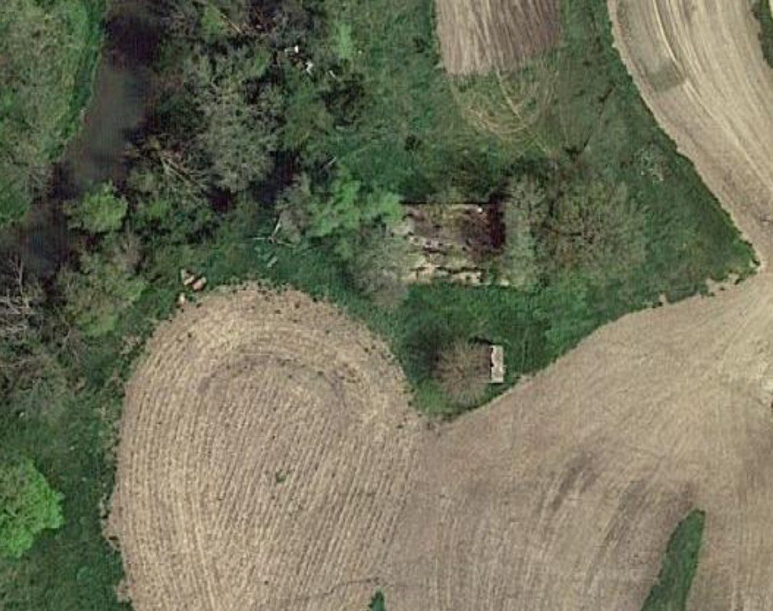
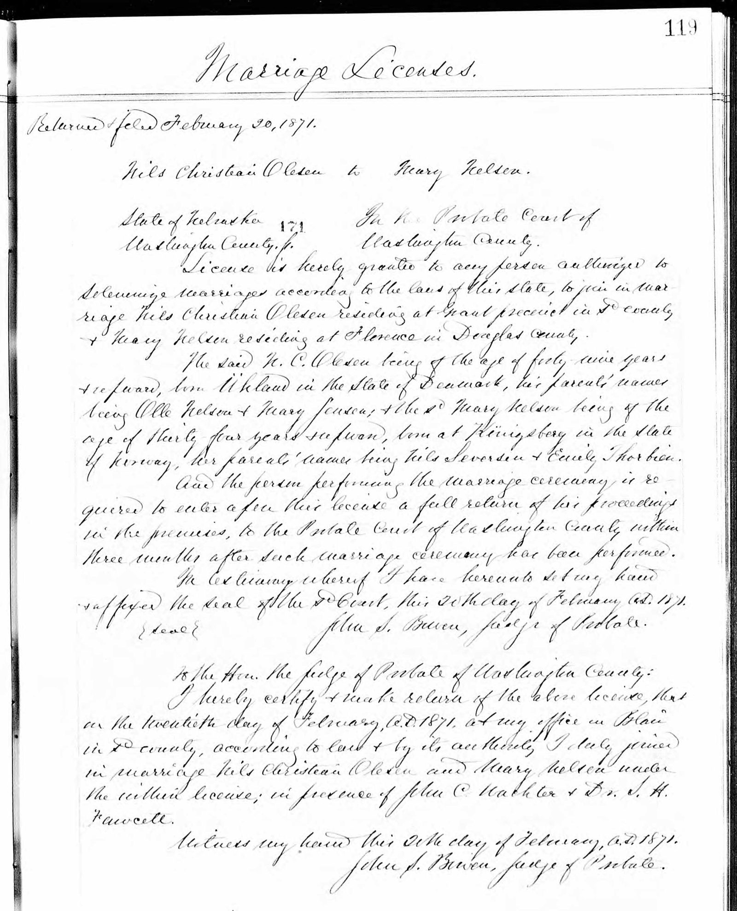
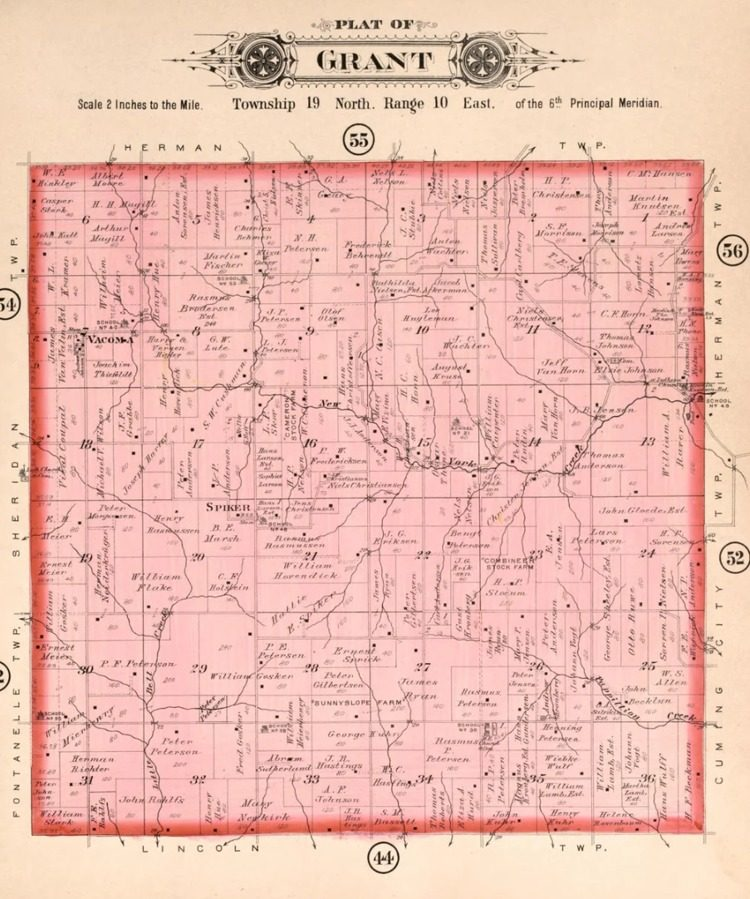
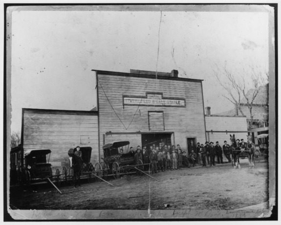
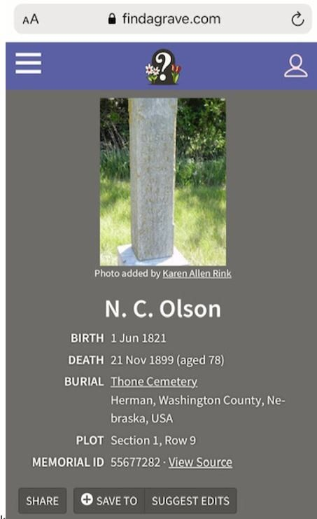

Chapter 7
Nelse C. Olson of Nebraska
1866–1899
The times: settling the Nebraska frontier. Nebraska became the 37th state on 1 March 1867.1 Omaha, south of Washington County, was where the first rails of the Union Pacific Railroad were laid.2 The Homestead Act granted a quarter section, 160 acres, to a settler who lived on and farmed it for five years, or 80 acres of the higher-priced "double-minimum" land, such as the alternate sections within railroad land grants.3 The size of his claim may reflect that rule. Life on the prairie was hard. Rocky Mountain locust swarms between 1873 and 1877 caused an estimated $200 million in crop damage across Nebraska and neighbouring states.4 Blair, platted in 1869 when the railroad arrived, became the seat of Washington County. From 1884 it was home to the Danish Lutheran school that became Dana College.5
Life on the prairie. A settler's first need was shelter. Near the Missouri and along its creeks there was timber for log cabins. Elsewhere settlers dug dugouts into hillsides, roughly ten feet square, or built houses of sod, whose walls, two to three feet thick, held in the heat in winter and kept the rooms cool in summer. Prairie fires swept the grasslands with little to stop them, and grasshopper swarms could strip a crop. On 12 January 1888 a blizzard struck without warning on a mild day, catching children at school and farmers in their fields. Temperatures fell to 30 to 40 degrees below zero, and it became known as the Schoolchildren's Blizzard. Isolation from other families was one of the hardest parts of frontier life.6
Settling in Grant Township
Niels Christian settled in Grant Township, Washington County, Nebraska, north of Omaha and west of the Missouri River.7 He was there early. He married in the county in February 1868 (see below), and his letter to Kirsten Marie, written before the spring of 1869, is headed "Ny York Creek, Cuming City", the creek that runs beside his land on the 1884 atlas.8 A homestead patent required five years of living on the land, so his patent of 1873 means he had filed his claim by about 1868.3 Over his 33 years in America the farm grew steadily. The records show him under the names Niels Olsen and, later, Nelse C. Olson.9


The census of July 1870 found him in Grant Township with 30 acres under the plough and 50 more still unbroken. The census taker valued his land at $800 and his personal property at $100. That year he harvested 300 bushels of corn, and his post office was Fort Calhoun. The census taker also ticked the column for male citizens of the United States aged 21 or over, which suggests he had already begun the process of naturalization.10


The Homestead
On 15 May 1873 the United States granted him his homestead. The patent, issued to "Niels E. Oleson" through the land office at West Point, Nebraska, confirms he had met the Act's terms: five years of living on and farming the land. It covers two adjoining 40-acre tracts in Section 10 of Township 19 North, Range 10 East, 80 acres in all, and carries the name of President Ulysses S. Grant.11


How homesteading worked. The Homestead Act of 1862 offered public land to any head of a family, or anyone aged 21, who was a US citizen or had filed a declaration of intention to become one. The settler chose an unclaimed tract, swore at the land office that it was for his own use, and paid a fee of ten dollars plus small commissions. He then had to live on the land and farm it for five years. At the end he returned with two witnesses who swore that he had done so, received a final certificate, and the patent, the deed from the United States, followed from Washington. A claim could be a quarter section of 160 acres, or only 80 acres where the land was priced at double the minimum, $2.50 an acre, as land near railroad grants was. Niels Christian's papers follow each step: application no. 1614, final certificate no. 651, and a patent for 80 acres dated 15 May 1873. Counting back five years, he must have made his entry by about 1867, and the 1870 census, which marks him as a citizen, suggests he had filed his declaration of intention by then.12
The Farm Grows
The farm kept growing. When the census taker came on 4 June 1880 he counted about 153 acres: 45 improved, 8 of meadow, 10 of woodland and 90 still unimproved. The farm was valued at $3,000 and its machinery at $100. In the household were his wife, entered as Caren, born about 1836 in Norway, and a second cousin.13 A land office tract book records that Niels C. Olson bought another 120 acres on 2 January 1884, although its legal description does not match any land in Washington County.14 The county atlas published that same year shows N. C. Olson owning two parcels in Section 10, marked 80 and 120 acres. The atlas marks his dwelling beside a creek, with the Thone family, after whom the local cemetery is named, among his neighbours.15
What the figures meant. His $900 in property in 1870 was a modest start. A study of the 1870 census found that the average household head in Nebraska owned property worth about $2,646, although an average is pulled up by a few rich men, and that 88 per cent owned something. Nationally, about half of all household heads owned no real estate at all. Four years after arriving, he was a landowner, if a small one. By 1880 the farm alone was valued at $3,000, nearly four times the land's value in 1870; the 1880 census no longer asked about personal wealth.16


The Nebraska state census of 26 June 1885 lists him as Nelse C. Olson, 64, farmer, born in Denmark to a Norwegian father and a Danish mother, with his wife Mary C., 54, born in Norway. The enumerator went straight from his door to that of Lewis Thone, a Norwegian farmer of 63. A county history of 1882 sketches Thone's life. Born in Norway on 1 October 1821, the same year as Niels, he had worked mainly in mining in Iowa County, Iowa, from 1850. He came to Washington County in 1856 and by 1882 farmed 280 acres, with his post office at Blair. He had married Sarah (Siri) Knudsen in 1856, and they had lost their son Edward in 1881, aged twenty. Sarah died in 1886. The Thones' name is the one the local cemetery bears, where Nelse C. Olson would be buried.17




Two Nebraska Marriages
A first Nebraska marriage. On 19 February 1868 the Washington County probate judge at Fort Calhoun licensed the marriage of "Nels Christian Oleson, aged 46 years" and "Anna Christiana Oleson, aged 59 years", both of Washington County. A minister of the gospel married them on 23 February 1868. The name and age fit Niels Christian, who was then 46. Nothing more is yet known of Anna Christiana. She was thirteen years older than him, and Oleson may have been a former married name. In the census of July 1870 he is listed alone, so she had died or left by then. The marriage took place a year before he wrote to Kirsten Marie asking for a divorce. (Nebraska, Select County Marriage Records, 1855–1908: Washington County, licence no. 065, p. 54.)
Another marriage. On 20 February 1871 he married again. The Washington County probate judge, John S. Bowen, issued the licence and performed the ceremony himself at his office in Blair. The witnesses were John C. Hachler [?] and Dr. S. H. Fawcett.
The groom was entered as "Nils Christian Olesen" of Grant precinct, "of the age of forty nine years & upward", born in Denmark. His parents are named as "Olle Nelson & Mary Jensen", the same Ole Nielsen and Maren Jensdatter as in the Als register of 1821. The bride, Mary Nelsen, was living at Florence in Douglas County, just north of Omaha. She was "thirty four years & upward", born at "Königsberg" (Kongsberg), the Norwegian silver-mining town. Her parents were Nils Severson and Emily Thorbien [?].19


The wedding raises a question the records do not yet answer. Kirsten Marie was still alive; she died in 1874. In May 1869 she had only just asked for him to be summoned to court, and no Danish judgment dissolving the marriage has been found. Unless one was given in 1869 or 1870, this marriage was bigamous under Danish law. The 1868 marriage to Anna Christiana certainly was, since it came before he had even asked for a divorce.20
The licence also settles who the wife in the censuses was. "Caren" in 1880, born about 1836 in Norway, and "Mary C." in 1885, born in Norway, are almost certainly both Mary Nelsen. Her 1871 age puts her birth in about 1836, exactly as in 1880. The "C." may stand for a second name such as Karen, so that she was perhaps baptised Mari Karen Nilsdatter. Her age of 54 in 1885 is five years out, a common census error.21
Mary and the Farm After His Death
Mary outlived him by more than ten years. On 26 May 1910 the census taker found Mary C. Olson, 80, a widow, still living in Grant Township in a house she owned, on her own income. She had come to America in 1867 and had borne no children, which explains why none ever appear in the household. Her age in 1910 points to a birth about 1830, in line with the 1885 census rather than the marriage licence. When she died is not yet certain. The Nebraska death index lists a Mary N. Olson whose death was registered in Washington County in 1917, the only woman of that name in the county. She was probably our Mary, the N perhaps standing for her maiden name, Nelsen, but only the death certificate can confirm it. A letter his son wrote in January 1918, discussed in chapter 8, makes it more likely. The family tree dates the division of his estate among his Danish children to 1915, which would fit a death in about that year.21
What became of the farm. Nine years after his death, the county plat book of 1908 still showed "N. C. Olsen" as the owner of 120 acres in the west part of Section 10, with a house marked beside the creek. The 80 acres just north of it were marked as the estate of a Bathilda Nielsen. The farm had evidently not been sold. A possible explanation of the long delay in settling his estate is that Mary kept the farm for her lifetime and that it passed to his Danish children only after her death, with the final settlement in 1922. This has still to be confirmed from the county's probate records. The smaller acreage suggests that part of the 200 acres shown in 1884 had been sold or passed on earlier. The county's deed and probate records should show who bought the land, and when.15


Death and Burial, 1899
Nelse C. Olson died on 21 November 1899, aged 78. Five months earlier, on 13 June 1899, a tornado had struck Herman, the nearest village, destroying much of it and killing thirteen people; nothing yet shows whether his farm was touched. Herman had been laid out in 1871, when the railroad arrived, and named for a railroad man, Samuel Herman. He is buried in Thone Cemetery near Herman, Washington County, in Section 1, Row 9. The cemetery was founded in 1882 on land given by Gilbert Thone and is also known as New York Creek Cemetery, after the creek named in the heading of his 1869 letter. His stone reads simply "N. C. Olson". His Find a Grave memorial gives his birth date as 1 June 1821, matching the Als church book. The firmer link between the Nebraska farmer and the Danish foster child is his 1871 marriage licence, which names his parents as Ole Nielsen and Maren Jensdatter.22




The death reached the Omaha papers a little over two weeks later. On 8 December 1899 the Omaha World-Herald carried a single line in its round-up of state news: "N. C. Olsen, aged 76 years, died near Blair a few days ago. He had lived in Washington county thirty-five years, coming from Denmark fifty years ago." It is the only notice of his death found so far. Its figures do not match the other records. He was 78, he had been in the county about 33 years, and he had left Denmark 33 years earlier, not fifty. Items like this were usually copied second-hand from a county paper, and their details were often wrong. The name, place and date leave little doubt that it is him. A fuller notice may survive in the Blair papers of late November 1899.22
Notes
Abbreviation: DFT = Damborg family tree, "20130316 Damborg", Ancestry.com Member Trees, GEDCOM export of 26 May 2026, including its facts, research notes and attached images. Short titles refer to the Works Cited.
- 1“Nebraska,” Wikipedia (37th state, 1 March 1867). ↩
- 2“Union Pacific Railroad,” Wikipedia (first rails laid at Omaha). ↩
- 3Homestead Act of 1862, text (National Archives handout) (a quarter section, or 80 acres of land priced at $2.50 an acre; patent after five years' residence or cultivation); Nebraska State Historical Society, “U.S. Government Land Laws in Nebraska, 1854–1904” ($2.50 double-minimum price on alternate sections within railroad land grants). ↩a ↩b
- 4“Rocky Mountain locust,” Wikipedia (swarms of 1873–1877; $200 million in crop damage in Nebraska and other states). ↩
- 5“Blair, Nebraska,” Wikipedia (platted 1869 with the Sioux City and Pacific Railroad; county seat; Dana College, 1884–2010); “Dana College,” Wikipedia (Trinity Seminary formed 1884 for the Danish Evangelical Lutheran Church Association). ↩
- 6NebraskaStudies.org, “Searching for Shelter” (timber near the Missouri; dugouts about ten feet square; sod walls two to three feet thick); Nebraska Virtual Capitol, “Prairie Disasters” (prairie fires, grasshoppers, blizzards; 30–40 degrees below zero in 1888; isolation); Nebraska State Historical Society, “Blizzard of January 12, 1888” (sudden storm on a warm day; children at school; “the schoolchildren's blizzard”). ↩
- 71870 US census, Grant, Washington, Nebraska (roll M593_833, p. 472A); DFT, Niels Christian Olesen: residences 1870, 1880, 1885, Grant Township. Blair lies about 26 miles northwest of Omaha (“Blair, Nebraska,” Wikipedia). ↩
- 8Niels C. Olesen to Kirsten Marie Jensen, undated letter headed "Ny York Creek, Cuming City, Nebraska", archive mark D 1092-69, enclosed with her petition (Aalborg Amt, journalsager, archive signature B3-5454) (photograph supplied by the family). Translation for this biography; some words are uncertain. DFT titles the image "1870 NCO ask for divorce". New York Creek is marked beside his land on the 1884 Washington County atlas. ↩
- 91870 US census and non-population schedule (“Niels Olsen”); 1885 Nebraska state census, Grant Township, p. 17 (“Nelse C Olson”). ↩
- 101870 US census, Grant, Washington, Nebraska, roll M593_833, p. 472A; U.S., Selected Federal Census Non-Population Schedules, 1870, Grant, roll 3, p. 3, line 14; DFT, residence note (post office Fort Calhoun). The population schedule is dated in July 1870 and marks him in column 19 (male citizens of the U.S. aged 21 and upwards). ↩
- 11Homestead patent, Niels E. Oleson, 15 May 1873, certificate 651, application 1614, West Point land office (BLM General Land Office records, accession NE1810__.129; image supplied by the family). ↩
- 12National Archives, “Homestead Act (1862)”; NebraskaStudies.org, “Homestead Act Signed” (160 acres to a head of household who lived on the land five years). National Archives, "Homestead Act (1862)," Milestone Documents (eligibility, including a declaration of intention; ten-dollar fee; five years' residence; proof by two witnesses; 160 acres at $1.25 or 80 acres at $2.50 an acre). ↩
- 131880 US census, Grant, Washington, Nebraska, roll 757, p. 248D, ED 036; Non-Population Schedules, 1880, roll 11, p. 4, line 6; DFT, image title “1880 Census NCO married to Caren and Second Cousin lives with them.” ↩
- 14Land office tract book entry, Niels C. Olson, 2 January 1884, as transcribed in the family's research notes, Maps of Niels Christian Olson. ↩
- 15Gillen and Davy, Washington County 1884, Nebraska, Grant Township plate (Historic Map Works), as annotated in Maps of Niels Christian Olson. Plat Book of Washington County, Nebraska (1908), Grant Township, p. 50 ("N. C. Olsen", 120 acres, Section 10; "Bathilda Nielsen Est.", 80 acres, Section 10); image supplied by the family. ↩a ↩b
- 161870 US census, Grant, Washington, Nebraska (real estate $800, personal estate $100); 1880 US census, agriculture schedule (farm $3,000, machinery $100); Rosenbloom and Stutes, “Reexamining the Distribution of Wealth in 1870” (mean total property of Nebraska household heads $2,646, 88 per cent with some property; about 52 per cent of household heads nationally with no real estate). The 1880 population schedule did not ask about real or personal estate. ↩
- 171885 Nebraska state census, Washington County, Grant Township, enumeration district 770, p. 17, lines 15–21, enumerated 26 June 1885 by W. C. Wood (NARA M352; image supplied by the family): dwelling 124, Nelse C. Olson, 64, and Mary C., 54; dwelling 125, Lewis Thone, 63, and family. A. T. Andreas, History of the State of Nebraska (Chicago, 1882), Washington County, Grant Precinct, sketch of “Louis Thorne”; Find a Grave, memorial 109924315, Siri Knutson Thone (1822–1886). ↩
- 18Satellite image and location from Maps of Niels Christian Olson (Google Maps, 41.6307° N, 96.2982° W). ↩
- 19Washington County, Nebraska, Probate Court, Marriage Licenses, p. 119, licence no. 171, Nils Christian Olesen to Mary Nelsen, issued 20 Feb. 1871, solemnised the same day at Blair by John S. Bowen, Judge of Probate, and returned 20 Feb. 1871; image from Nebraska, U.S., Select County Marriage Records, 1855–1908 (Ancestry), cited in DFT. Words marked [?] are uncertain readings. ↩
- 20DFT, Kirsten Marie Jensen: death 1 July 1874; Kirsten Marie Jensen to the Stiftamt, 23 May 1869 (D 1092-69); no divorce judgment has yet been found. ↩
- 211880 US census (Caren, born about 1836, Norway); 1885 Nebraska state census (Mary C., 54, born in Norway); compared with the 1871 marriage licence (Mary Nelsen, 34 and upward, born at Kongsberg, Norway); 1910 US census, Grant, Washington, Nebraska, enumeration district 141, sheet 3A, line 15, dwelling 46, family 48, enumerated 26 May 1910 (Mary C. Olson, head, 80, widowed, 0 children born, born Norway, immigrated 1867, own income, owns home; image supplied by the family); DFT, Niels Christian Olesen, death note (estate, 1915; final settlement 1922); Nebraska Death Index, 1904–1968 (Reclaim the Records, nebraskadeathindex.com), Olson, Mary N., Washington County (county code 89), 1917, certificate no. 2263. ↩a ↩b
- 22Find a Grave, memorial 55677282, N. C. Olson, Thone Cemetery, Herman, Washington County, Nebraska (screenshot supplied by the family); DFT, death 21 November 1899 and image “1899 NCO Grave.” Find a Grave, Thone Cemetery (also known as New York Creek Cemetery; formed 10 May 1882 on land given by Gilbert Thone); “Herman, Nebraska,” Wikipedia (founded 1871, named after the railroad man Samuel Herman; tornado of 13 June 1899, 13 deaths); Andreas, History of the State of Nebraska, Washington County (Herman); Omaha World-Herald, 8 December 1899, p. 4, col. 4 (state news: "N. C. Olsen, aged 76 years, died near Blair a few days ago…"; image supplied by the family). ↩a ↩b